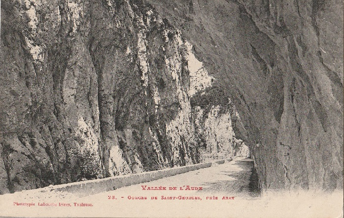
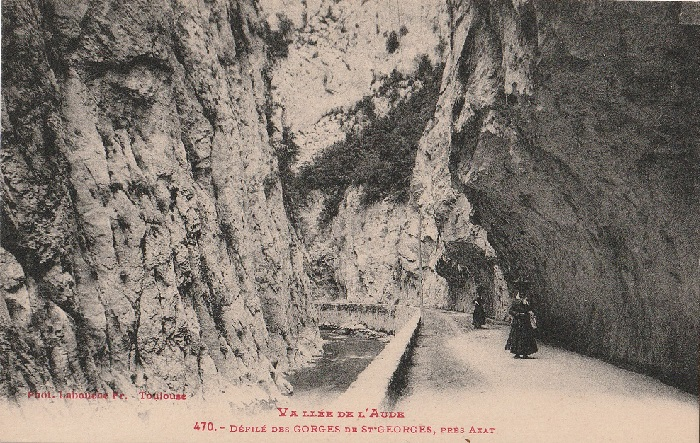
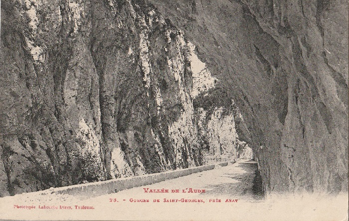
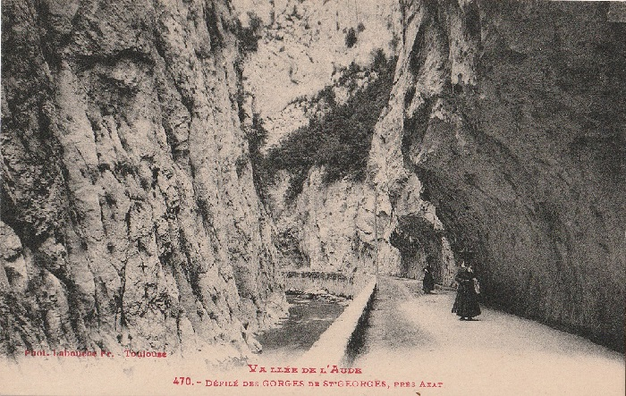

proposée par "Mémoire Filmique Pyrénées-méditéranée"

proposée par "Mémoire Filmique Pyrénées-méditéranée"

Les autres gorges de L'Aude, moins longues que celle de la Pierre-Lys, mais tout aussi spectaculaires, juste après Axat en remontant l'Aude depuis Saint-Martin-Lys


Au milieu des gorges, soit à 150 mètres de part et d'autre, se trouve un espace plus dégagé, volontairement creusé, protégé aujourd'hui par un filet métallique sur toute la hauteur. Etait-ce à cet endroit des gorges où les caches à mine, sensé faire s'écrouler les gorges en cas d'invasion espagnoles, étaient positionnées ?


A la sortie des gorges, coté Axat se trouve la résurgence d'une source, 2 tuyaux guides l'eau (il y en a un autre qui n'apparaît pas sur la photo). Le temps que je prenne la série de cliché sur les gorges j'ai pu voir au moins 5 voitures s'arrêter pour prendre de l'eau (sans compter les piétons...). Certaines avaient la malle pleine de bidons.
Journal des haras, des chasses et des courses de chevaux de juillet 1852
puis les gorges Saint-Georges, dont les belles horreurs surpassent encore celles de la Pierrelis. Les pieds de nos chevaux (nous avions laissé la petite voiture à Axat) résonnaient sur le roc, et les cingles ou merles d’eau, aux ailes de jais, au poitrail d’argent, s’envolaient devant nous en poussant leur petit cri sauvage.
Stations thermales de l'Aude. Rennes-les-Bains, Campagne, Alet de 1874
Au-delà d'Axat, et après un trajet de 3 kilomètres, on arrive aux Gorges de Saint-Georges, magnifique défilé taillé dans la chaîne d'Aiguesbonnes pour le passage de l'Aude, et qui répète, plus au sud, la disposition du défilé de Pierre-Lis, creusé dans la chaîne de Saint-Antoine. Les gorges de Saint-Georges se distinguent toutefois par le plus grand rapprochement des montagnes en regard, que l'Aude seule sépare à leur base ; par leur plus grande élévation et leur coupe plus véritablement à pic. La route suit la rive droite de la rivière. Pour la tracer, il a fallu, là encore, la tailler dans le roc vif, au flanc de la montagne, en la laissant surplomber en demi-tunnel sur la tête des voyageurs. Rien ne saurait rendre l'impression, mêlée d'une sorte de crainte, que l'on éprouve en franchissant ce merveilleux passage, moins prolongé d'ailleurs que le défilé de Pierre-Lis.
01 mars 1877 - Une excursion dans les Vallées de l’Aude et du Rébenty (deuxième partie) Gazette des Pyrénées : journal de Pau, chronique des eaux thermales, paraissant tous les samedis
Ici nous arrivons en pays connu, et bientôt, au célèbre défilé de Saint-Georges. Décrire ce passage est impossible; il faut avoir vu ces deux murailles grises, dans la paroi desquelles la route a dû être entièrement taillée en demi-tunnel, pour se rendre compte de l’émotion profonde que l’on éprouve en pénétrant dans la pénombre de ces gigantesques rochers. C'est écrasant, et je ne puis encore distinguer si c’est un sentimeut d’admiration ou bien une sensation de stupeur que m’a causé ce grandiose et sombre défilé. Ce dont je suis certain, c’est que les deux fois que je l’ai traversé j’ai éprouvé un sentiment de bien être en entrant dans le vaste et lumineux bassin d’Axat.
Les Pyrénées inconnues : le Capsir et le Donnezan de 1879
La route, toujours en corniche au-dessus de la rive droite, se continue pendant quelques kilomètres ; puis elle descend presque au bord du torrent et devant nous se dresse brusquement une énorme muraille de plusieurs centaines de mètres de haut, nue et aride. Cette muraille, formée par les contreforts de la montagne du Bac d'Estable ( 1,512 m.) dont le sommet en plateau est couvert d'une magnifique forêt, se prolonge jusqu'au bord même de l'Aude, ne laissant pas, par conséquent la moindre place pour la route. Il a fallu ici creuser un tunnel sous la montagne, et on comprend sans peine de quelles difficultés ce beau travail a été entouré. Il n'est pas davantage utile de décrire le singulier aspect qu'offrent l'entrée et la sortie de ce souterrain, après une série d'étroits couloirs qui ont fait donner à ce lieu le nom de Gorges de Saint-Georges.
Dictionnaire géographique et administratif de la France et de ses colonies (1890-1905)
En aval de Gesse, l'Aude reçoit l'Aiguette ou Guette, torrent aux cluses profondes, et, aussitôt après le minime élargissement de ce petit bassin, elle se heurte aux roches du célèbre défilé de St-Georges « Décrire ce passage est chose impossible; il faut avoir vu ces deux murailles grises, dans la paroi desquelles la route a dû être entièrement taillée en demi-tunnel, pour se rendre compte de l'émotion profonde que l'on éprouve en pénétrant dans la pénombre de ces gigantesques rochers. C'est écrasant, et l'on ne sait pas bien distinguer si c'est un sentiment d'admiration ou bien une sensation de stupeur que cause ce grandiose et sombre défilé. Ce qu'il y a de certain, c'est que lorsqu'on en sort, on éprouve un sentiment de bien-être en entrant dans le vaste et lumineux bassin d'Axat. »
Bulletin de la Société d'études scientifiques de l'Aude de 1891
Nous arrivons à Axat où nous nous reposons un moment pendant que le conducteur change ses chevaux ; quelques instants après avoir repris notre course, nous atteignons les admirables gorges de St-Georges. Dans ces gorges, l'espace pour l'Aude et pour la route est des plus restreints ; la montagne semble se joindre au-dessus de nos têtes et défendre au soleil de pénétrer dans cet antre. Spectacle vraiment grandiose et sauvage à la fois !
Le Vigneron narbonnais du 02 janvier 1892
Nous sommes aux gorges de Saint-Georges. Je n'essaierai pas de vous décrire ce gigantesque amoncellement de roches dont la hauteur donne le vertige. Au fond de cette fantastique coupure dont les parois à perte de vue suspendent sur nos têtes l'éternelle menace d'un irrésistible écrasement, l'Axat aux flots clairs gronde, chante ou murmure. Un courant d'air d'une fraîcheur délicieuse circule dans l'étroit couloir où jamais ne descendit le moindre rayon de soleil.
Et cependant dois-je l'avouer, il me semble avoir respiré plus à l'aise quand je me suis retrouvé dans l'aveuglante fournaise de la grand'route, sous les rayons implacables du soleil de juillet.


DÉFILÉ DE SAINT-GEORGES. ENTRÉE. SORTIE.
L'AUDE DANS LA GORGE. — A 2 kilomètres à peine d'Axat, l'Aude a encore, comme à Pierre-Lys, creusé une gorge véritablement fantastique dans la montagne calcaire qui lui barrait la route. Plus court que la gorge de Pierre-Lys, mais plus impressionnant peut-être, le défilé de Saint-Georges n'est qu'une énorme coupure à pic entre deux monts verticaux d'une hauteur effrayante. L'Aude et la route, souvent conquise sur le lit du torrent, occupent toute la gorge, qui n'a pas 30 mètres de large.
A l'entrée, une puissante usine électrique, mue par une dérivation de l'Aude, faite à Gesse, 6 kilomètres plus haut, produit une force de 6,000 chevaux et distribue la lumière et l'énergie électrique dans toute la région.
L'usine, qui ne manque pas d'intérêt par elle-même, se trouve dans un site magnifique, juste à l'entrée de la gorge du côté d'Axat.
Elle n'en gâte pas le pittoresque, et, pour une fois, l'industrie a respecté la beauté du site, un des plus beaux qui soient en France. L'usine de Saint-Georges distribue l'énergie électrique et la lumière dans le département de l'Aude tout entier. La chute d'eau qui l'alimente est à 70 kilomètres du centre de distribution, d'où partent des dérivations, ayant 30 à 40 kilomètres de longueur.
C'est peut-être une installation unique dans le monde entier, puisque le réseau actueL ne comprend pas moins de 400 kilomètres de canalisation a courant triphasé à haute tension et qu'on prévoit un développement éventuel de 600 kilomètres, avec des distances de 100 à 130 kilomètres de l'usine génératrice aux points les plus éloignés d'utilisation.
La prise d'eau s'effectue par un barrage situé à Gesse, à 60 kilomètres des sources de l'Aude.
L'eau, amenée par un souterrain de près de 6 kilomètres au-dessus de l'usine, forme une chute de plus de 100 mètres de hauteur. Quatre turbines font tourner autant de dynamos et produisent un courant qui passe par des transformateurs d'où il s'achemine par des fils conducteurs qui rayonnent dans toute la région. On a prévu même un développement ultérieur considérable, et l'usine pourrait facilement être doublée bien qu'elle représente actuellement une force de 5,ooo chevaux.
Bulletin de la Société d'études scientifiques de l'Aude de 1902

A 2 k. 500 d'Axat nous sommes en face de l'usine hydroélectrique construite sur la rive gauche, à 150m seulement de l'entrée des gorges Saint-Georges, dont elle a pris le nom. La visite de l'usine étant remise au retour de Gesse, nous pénétrons alors dans les fameuses gorges, formées comme la Pierre-Lys, par une brèche dans le calcaire néocomien, dont les parois, distantes seulement de 20 à 25 mètres, sont à pic et d'une hauteur de 300 à 350 m. La longueur de cet étroit couloir est de 500m. La route qui passe dans ces gorges n'a pu être établie qu'à la condition de prendre la moitié de sa largeur dans le rocher et l'autre moitié dans le lit de la rivière. Dans la partie rocheuse elle est en encorbellement formant demi-tunnel ; dans la rivière elle est maintenue par un fort mur de soutènement.
Des chambres de mines ont été pratiquées dans ces gorges pour que la route puisse être détruite facilement en cas de guerre.
A la sortie de ce sauvage défilé, où le soleil pénètre difficilement, on croit revivre : la vallée s'élargit, mais le flanc des coteaux reste nu sur une certaine longueur.
Bulletin de la Société de géographie de Toulouse de 1902
Les plus imposantes et les plus pittoresques des gorges de l'Aude sont celles de Saint-Georges et de la Pierre-Lys, que l'on place au premier rang des curiosités naturelles du département. Dans ces défilés, l'admiration qu'on éprouve n'est pas exempte d'un certain malaise. Dans les gorges de Saint-Georges, dont les parois sont comme de gigantesques murailles de 300 à 400 mètres, faites de mains d'hommes, on est écrasé sous le poids de ces masses formidables; devant les roches convulsées de la Pierre-Lys, fendues du haut en bas, déchiquetées ou arrondies par les intempéries, tapissées de ronces enchevêtrées, on est saisi par leur horrible beauté. On se sent transporté loin des villes et de leur civilisation, loin des hommes, loin des temps présents.
En commençant cet article, nous avions l'intention de relater une excursion dans ces merveilleux défilés, mais nous avions trop présumé de nos forces. Tout récit serait pâle et incolore auprès de la réalité, et nous conseillerons à nos lecteurs de faire et de refaire cette traversée dont nous nous sentons impuissants à aborder la description.
A quel agent attribuer la formation de ces vastes échancrures? Probablement à l'érosion par décollement. A l'époque quaternaire, durant la période des glaciers, l'Aude était sans doute une rivière souterraine qui, peu à peu, a rongé les parois de la voûte sous laquelle elle passait. Les parois schisteuses et argilo-calcaires se sont effondrées sous le poids énorme des couches qui se trouvaient au-dessus d'elles, et l'Aude, avec le temps, a charrié jusqu'à son embouchure ces barrages accidentels qui ont formé, depuis, les alluvions qu'on y voit aujourd'hui.
Annuaire du club alpin français de 1903
Et, comme contraste absolu entre les perfectionnements du progrès et les splendeurs de la nature abrupte, l'usine est assise à la base d'une aiguille majestueuse, à pic, qui ferme la gorge de Saint-Georges, défilé étroit dont les parois resserrées, escarpées comme des falaises, enferment encore l'Aude dans le fond d'une brèche en zigzags que suit difficilement la route. On vient d'admirer la civilisation dans la fièvre intense d'une usine, et on se trouve quelques mètres plus loin perdu dans les profondeurs sauvages d'un abîme grandiose, encaissé de toutes parts par des escarpements de plus de 300 mètres, fendillés et lézardés du haut en bas, et tapissés de chênes verts qui enchevêtrent leurs ramures. En maints endroits, la route est entaillée dans le roc, et la paroi opposée qui surplombe donne la sensation terrifiante d'une caverne sombre, au fond de laquelle gronde la masse bouillonnante des eaux.
L'éclair du 16 août 1939 - Haute vallée de l'Aude - tourisme
Au fond du vallon [d'Axat], la falaise droite, hautaine, monte, infranchissable. La route pénètre, comme un pic, dans le roc formidable.
On pénètre dans la gorge de Saint-Georges : la route surplombe la rivière de quelques mètres à peine, on est dans le lit du torrent ; il faut lever la tête pour voir ce défilé grandiose, véritable boyau, moins haut et moins divers que la Pierre-Lys ; sa beauté étrange vient de son unité de rue étroite où passent la route et la rivière ; toutes les deux ont sculpté leur passage ; ce couloir de sept mètres de large a des parois blanches et unies.

Les Gorges de St Georges
Sur la façade de cette levée de falaises de trois cents mètres, quelques chênes-verts accrochent leur végétation, comme des vases à un balcon ; cette rue creusée au-fond de l'abîme, est tortueuse et forme deux courbes qui permettent de mieux voir ce panorama sauvage.
2 Photographies d'Arthur Batut vers 1875 - Coll Espace photographique Arthur Batut/Archives départementales du Tarn


 (Photos publiées sur le facebook de Dominique Arthur Batut ajoutées à mon site avec son accord, information transmise par Bernard Louvet)
(Photos publiées sur le facebook de Dominique Arthur Batut ajoutées à mon site avec son accord, information transmise par Bernard Louvet)
je mets ici les cartes que je connais de ces gorges, un peu en vrac... (pas triées particulièrement ni par rapport à la date d'édition ni par rapport à l'approche des gorges - à vous de faire l'exercice...)

 




L'usine hydroélectrique de St Georges
Randonnée au belvédère des gorges de St Georges
La principale raison de la présence de cet article sur le site consacré à Saint-Martin-Lys, est vraisemblablement que... c'est moi qui ai écrit l'article de Wikipedia sur les gorges de Saint-Georges.)
Mais aussi que beaucoup d'articles de presse mentionnant les gorges de la Pierre-Lys, présentent également les gorges de Saint Georges et donc que mes recherches systématiques sur les unes m'a amené de la matière sur les autres, que je souhaitais partager - voir ci-dessus.
De par cette première entorse caractérisée à ne mettre que des sujets en rapport avec Saint Martin sur le site (même si avec l'article consacré au chef de gare de Lapradelle j'avais déjà un peu digressé) je pense enrichir le site en suivant l'Aude et le Rébenty
La logique est au moins que j'arrive à Gesse... puisque mon arrière grand-père était de Bessède-de-Sault